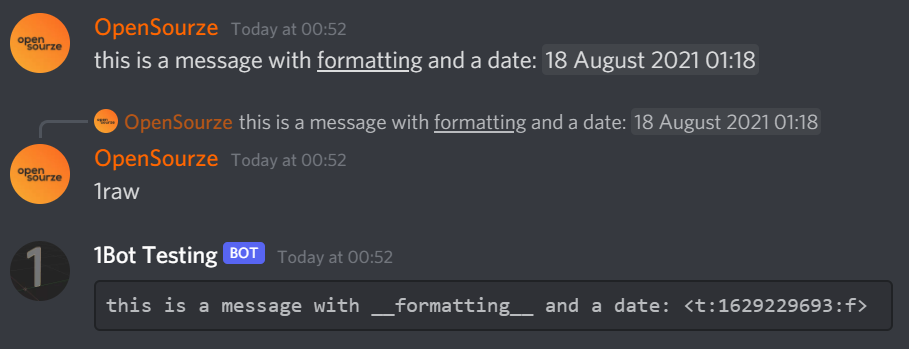

Moderation commands
-
Warn
1 warn {member} {reason}Sends a warning to the user's DMs with the provided reason and logs it in a database. This command also sends you a Warning ID which you can use to delete the warning from the user later.
-
Delete warn
1 delwarn/unwarn {warning ID} {member}Delete the warning for the member with the Warning ID, which you can get from the 'warnings' command or from the message sent by 1Bot after warning a user.
-
Warnings
1 warnings/warns {member}Lists the last 15 warnings for the member.
-
Clear warns
1 clearwarns {member}Deletes all warnings for the given user.
-
Mute
1 mute {member}Removes the permission for a member to send messages or speak in voice channels.
-
Temp-mute
1 tempmute/tmute {member} {duration} [reason]Temporarily mutes a member. Examples:
1tmute @Wumpus#0000 20m Being mean- mutes Wumpus for 20 minutes with the reason "Being mean".
1tempmute @Wumpus#0000 1d- mutes Wumpus for 1 day without a specified reason.
1 tmute @Wumpus#0000 50s spam- mutes Wumpus for 50 seconds with the reason "spam". -
Unmute
1 unmute {member}Undo the mute/tempmute command.
-
Kick
1 kick {member}Removes a member from the server. The member can join the server again if they are kicked.
-
Ban
1 ban {member}Removes a member from the server, but they cannot join the server again until you revoke the ban in the server settings.
-
Unban
1 unban {username+tag}Unbans a user. You must provide the exact username along with the tag.
Example:1 unban Wumpus#0000 -
Nickname
1 nick/nickname {member} [nickname]Changes the nickname of the member. If you leave the nickname option blank, the member's nickname will be removed.
-
Slowmode
1 slowmode {seconds}Sets the slowmode for the current channel. The seconds option doesn't have to be one of Discord's slowmode interval numbers. It can be anything, like "7", which is not a valid option in Discord's default slowmode settings.
-
Role commands
Tip: You can type the name of the role (the exact name, with capitalisation) to provide it as an option, or just @mention it. If you have developer mode on, you can also use the role's ID.
1 role create/c {name}Creates a new role with the given name.
1 role delete/d {role}Deletes the specified role.
1 role add/a {member} {role}Adds the specified role to the member.
1 role remove/r {member} {role}Removes the specified role from the member.
-
Clear/purge
1 clear [amount]or1 purge [amount]Deletes many messages at once. If amount of messages is not specified, 1Bot will delete the last 5 messages.
-
Nuke
1 nuke/clearchannel/clearall [channel]Deletes all messages in the specified channel. If the channel is not provided, the current channel will be cleared.
-
Lockdown/lock
1 lock [channel]or1 lockdown [channel]Disables permissions for everyone to speak in a channel. If no channel is provided, 1Bot will lock the channel where you invoked the command.
-
Unlock
1 unlock [channel]Undo the lockdown command.
-
Snipe
1 snipe [channel]Displays the last message that was deleted in the channel. If no channel is provided, 1Bot will get the last deleted message from the current channel.
Utility commands
-
Calculator
1 calc/calculate {1st number} {operation} {2nd number}Run a simple math operation with two numbers. You will have to separate the numbers and operation by spaces.
Characters recognised as operations:
- Addition:
+, plus - Subtraction:
-, minus - Multiplication:
*, x, times - Division:
/, by
- Addition:
-
Emoji
1 emoji/emote/createemoji/addemoji {emoji name} [image link]Creates an emoji with the given name. You will have to attach an image for the emoji OR add a valid image link at the end.
-
Raw message
1 raw/rawtext [message ID]You can reply to a message with this command and 1Bot will send the raw, unformatted text of the message you replied to. You can also use a message ID instead of replying too.
Example usage:
 -
Weather
1 weather {city,statecode,countrycode}Gets weather information for a city. The city name is required. Optionally add state and country codes separated by commas.
-
GitHub
1 github/searchrepo/githubsearch {search query}Search for GitHub repositories right inside Discord. Enter a search query and 1Bot will send you the first result.
-
Embed Builder
1 embed/makeembed/createembed
Example embed ↑
This command starts an embed creator, which builds an embed in the channel you're in. The messages sent in the process will be cleared after sending the embed. -
Poll
1 poll "{Question}" {choice1/choice2/choice3}....Creates a poll. Put the question in double quotes and separate each option with a slash. You cannot have more than 10 options.
-
NPM
1 npm {package name}Get information about the specified NPM package. This is not a search command, so you will need to provide the correct name of the package.
-
PyPI
1 pypi {package name}Get information about the specified PyPI module. This is not a search command, so you will need to provide the correct name of the module.
-
Base64
1 base64/b64 encode/e {text}"base64" or "b64" is the command base, and "encode" or "e" is the subcommand. The encode subcommand will convert your provided text into base64.
1 base64/b64 decode/d {code}"base64" or "b64" is the command base, and "decode" or "d" is the subcommand. The decode subcommand will convert your provided base64 code into text.
-
Lyrics
1 lyrics {song}Gets lyrics for the specified song. The song name is required. If the lyrics are too long, you will get reaction buttons to switch between pages of the lyrics so that you can view all the lyrics without 1Bot flooding your channel.
Fun commands
-
Chess Together
1 chess/chesstogetherYou will need to be inside a voice channel for this to work.
This command starts a Chess in the Park activity in your voice channel, which lets you play chess inside the voice channel with friends. -
YouTube Together
1 yt/youtubeYou will need to be inside a voice channel for this to work.
YouTube Together lets you watch YouTube videos with your friends at the same time, all within a voice channel. Anyone can control the videos. -
Dog
1 dogGets a random dog image and dog fact.
-
Cat
1 catGets a random cat image and cat fact.
-
Bored
1 boredGives you something to do if you're bored.
-
Reddit/meme
1 reddit [subreddit]or1 meme [subreddit]If a subreddit is not specified, 1Bot will fetch a random meme from Reddit for you. If you do include a subreddit, 1Bot will get a random post from there.
-
GIF
1 gif {query}Search for GIFs on Tenor with your query and send the top result.
-
8Ball
1 8ball/eightball {question}Ask the magic 8Ball a yes-or-no question.
-
Dad joke
1 dadjokeSend a random dad joke.
-
Coin flip
1 flip/coinflip/flipcoinFlip a coin. You have a 50-50 chance of getting heads or tails.
-
Fake Moderation Commands
-1 bean {member}A fake ban command that can be used by anyone. This does not actually ban the member, it is meant to confuse them.
-1 warm {member}A fake warn command that can be used by anyone. This does not actually warn the member, it is meant to confuse them.
-
Mock
1 mock {text}Sends the text back in alternating case. For example,
1 mock i am smartwill returni aM SmArT
Image commands
-
Amogus
1 amogus/sus [member]Amogus, but with the member's avatar.
You can also attach an image to use instead of a member's avatar. -
YouTube Comment
1 comment/ytcomment/youtubecomment {text}Generate an image of a YouTube comment by you, with whatever you provide in the text option.
-
Wasted
1 wasted [member]Adds a "wasted" overlay to the member's avatar. You can also attach an image to use instead of a member's avatar.
-
Tweet
1 tweet {text}Generates an image that looks like a Tweet, with whatever you provide in the text option.
-
Blurple
1 blurple [member]Applies a filter with Discord's blurple colour on the member's avatar. You can also attach an image to use instead of the member's avatar.
-
Triggered
1 triggered [member]Creates a triggered gif with the member's avatar.
Note: If there is a [member] option available on the image commands but you don't provide an input for it while running the command, your own avatar will be used.
Miscellaneous
-
Changelog
1 changelogSends the details of the latest 1Bot update.
-
Ping
1 pingShows you the latency of the bot in milliseconds.
-
Suggest
1 suggest {suggestion}Sends a suggestion to the developers. Spamming this can result in a block.
-
Upvote
1 upvoteSends the link to upvote 1Bot on Top.gg.
-
Invite
1 inviteSends the link to add 1Bot to your server.
-
Bot info
1 info/botinfo/informationSends information about the bot.
-
User info
1 user/userinfo [member]Sends information about the member. If the member is not specified, 1Bot will send information about yourself.
-
Server info
1 server/serverinfoSends information about the server you are currently in.
-
Member count
1 membercount/members/memSends the number of humans, number of bots, and total member count of the server you are in.
-
Avatar
1 avatar/av/pfp [member]Sends the avatar of the member. If not specified, you'll get your own avatar.